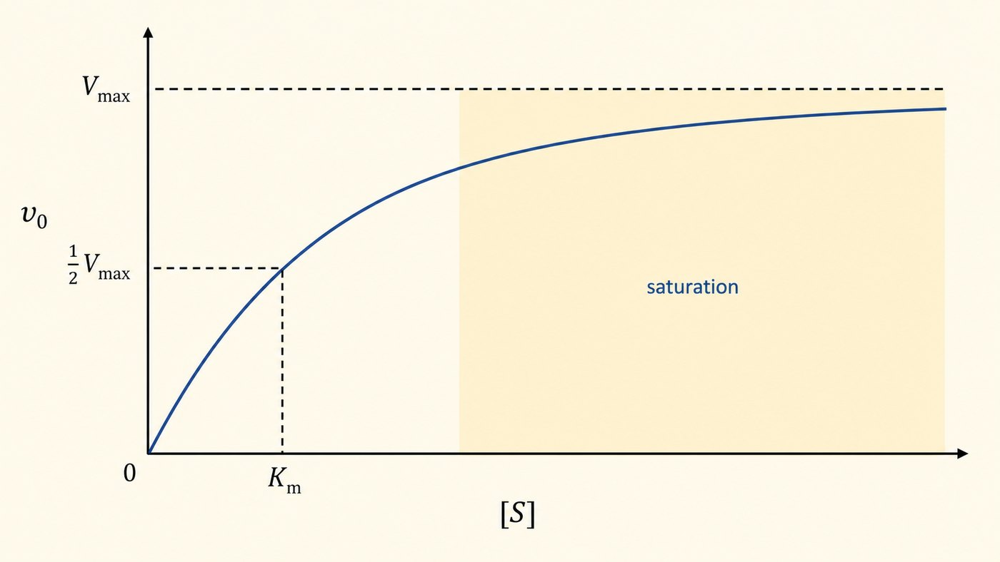
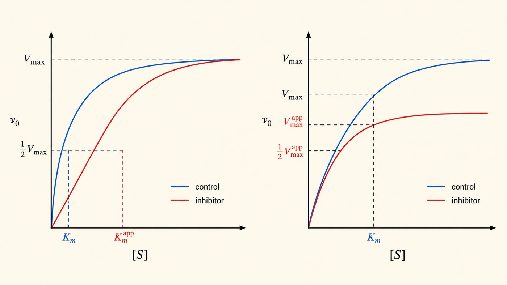

第 7 週
動力學與抑制
Enzyme (2): động học và chất ức chế
Nối tiếp tuần trước
酵素抓受質,讓反應變快。
Enzyme bắt cơ chất, phản ứng nhanh
量『有多快』、『抓多緊』。還有怎麼『擋住』它。
Đo tốc độ, độ bám, và cách ức chế
活化能是反應門檻(第 6 週)。
活性部位誘導契合(第 6 週)。
Kiến thức cũ dùng hôm nay
Từ vựng · 不用背,看過就好
| 中文 | Tiếng Việt | English | 中文 | Tiếng Việt | English |
|---|---|---|---|---|---|
| 酵素動力學 | Động học enzyme | Kinetics | 抑制劑 | Chất ức chế | Inhibitor |
| 米氏方程式 | PT Michaelis-Menten | MM equation | 競爭性抑制 | Ức chế cạnh tranh | Competitive |
| 米氏常數 | Hằng số Michaelis | Km | 非競爭性抑制 | Ức chế không cạnh tranh | Noncompetitive |
| 最大速率 | Tốc độ tối đa | Vmax | 回饋抑制 | Ức chế ngược | Feedback |
| 初速率 | Tốc độ ban đầu | V₀ | 磷酸化 | Sự phosphoryl hóa | Phosphorylation |
競爭性 = cạnh tranh。非競爭性 = không cạnh tranh。差別就是加不加「không」。
Đường cong Michaelis-Menten

受質越多,酵素越快 —— 但有上限。
到了上限,再加受質也沒用 —— 酵素都在忙。
Vmax và Km
最快的速率。
是漸近線 —— 永遠碰不到。
Đường tiệm cận
速率到 ½Vmax 時的受質濃度。
Nồng độ cơ chất tại ½Vmax
Km nằm trên trục X
速率等於一半 Vmax 時。它剛好是那個濃度。
Chất ức chế

很多藥物就是抑制劑。擋住某個酵素,病就好了。
兩種:搶活性部位(競爭性)/ 黏別的地方(非競爭性)。
So sánh 2 loại ức chế
| 競爭性 Cạnh tranh | 非競爭性 Không cạnh tranh | |
|---|---|---|
| 黏在哪 | 活性部位(跟受質搶) | 別的地方 |
| 加很多受質 | 可以救回來 | 救不回來 |
| Vmax | 不變 | 下降 |
| Km | 變大 | 不變 |
這張最容易背反。一定要對照圖。
Cách nhớ không bị ngược
搶「位置」。
加夠受質能擠掉它。
→ 動 Km(Vmax 不變)
Giành vị trí → đổi Km
降「上限」。
受質趕不走它。
→ 動 Vmax(Km 不變)
Hạ trần → đổi Vmax
Ức chế ngược
工廠做太多產品,就該停工。細胞也一樣。
細胞省成本的方式。第 13、15 週的代謝路徑都靠它調控。
Công tắc: phosphoryl hóa
開關切換。
Thêm phosphate → chuyển trạng thái
切回去。
Bỏ phosphate → đổi lại
第 17 週的胰島素、升糖素。就是用這招控制代謝。
Bài tập: Nhìn hình
在米氏曲線上指出 Chỉ ra trên đường cong:
Bài tập: Đúng hay sai
Km 越小,酵素抓受質抓得越緊。
競爭性抑制會讓 Vmax 下降。
加很多受質。可以克服競爭性抑制。
回饋抑制是一種機制。最終產物抑制第一個酵素。
想一想:設計藥物時。競爭性好還是非競爭性好?
下週 · Tuần sau
Carbohydrate
▶ 課前:看詞彙表第 8 週(18 個詞)
Xem trước 18 từ của tuần 8
▶ 小測:下週前 10 分鐘,考今天的詞
Kiểm tra 5 câu
▶ 注意:第 9 週期中考,範圍第 1–8 週
Chú ý: thi giữa kỳ tuần 9, phạm vi tuần 1–8